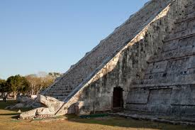
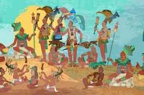
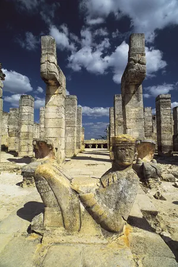
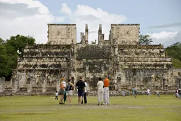
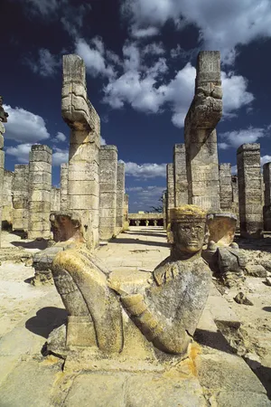
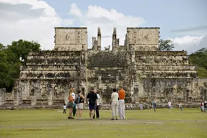

Wonders Name : Chichen Itza Location : Mexico What is it ? :It is thought to have been a religious, military, political, and
commercial center that at its peak would have been home to 35,000 people.er Place : Chichén Itzá, ruined ancient Maya city occupying an area of
4 square miles (10 square km) in south-central Yucatán state, Mexico.
Amazing facts about Chichen Itza

The equinox effect
On every equinox, the sun of the late afternoon creates the illusion of a snake
creeping slowly down the northern staircase. Symbolically, the feathered serpent joins the heavens, earth and the underworld, day and
night.

People behind it
It was founded by the Maya, an ancient people inhabiting the Yucatan peninsula.
Historians believe that Chichen Itza was founded and rose
to prominence due to its proximity to the Xtoloc cenote, an underground source of fresh water.
The Pyramid of Kukulkan
The tallest structure in Chichen Itza is the ancient pyramid, El Castillo, otherwise known as The Pyramid of Kukulkan which means
Feathered Serpent in Spanish.
 


